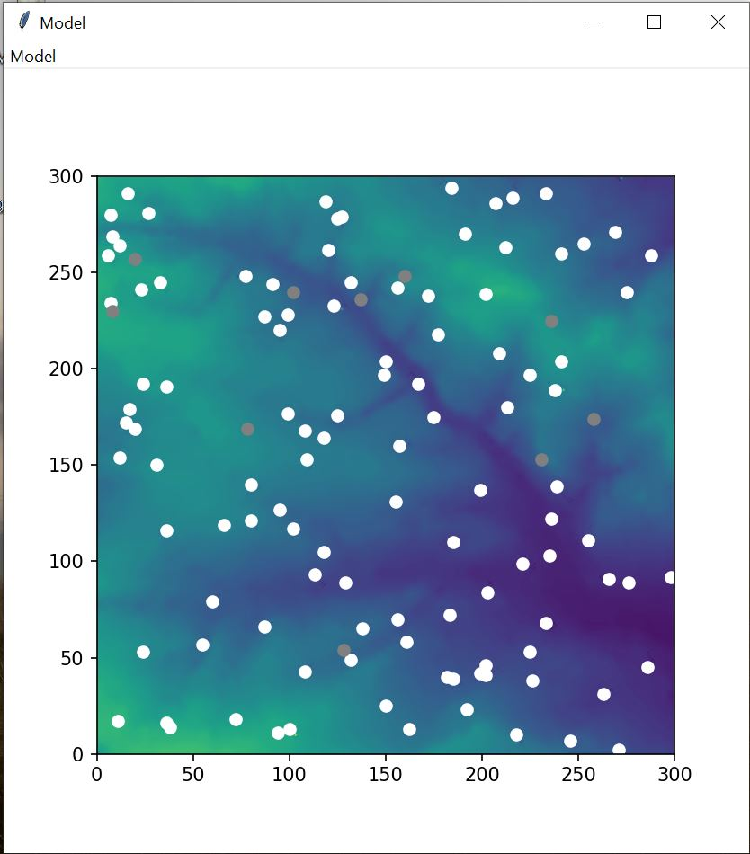

I am Student studying Msc River Basin Management at the Universtiy of Leeds curently developing my python programming skills. This website shows practical work I have completed during my studies.
I have developed a Agent based model in which Agents interact with a environment. More information is available on the Readme.txt file. Functions include:
- Move around the environment in a random way
- eating the environment and throwing up if they have eaten too much
- sharing their resources with with neighbours, or if they have not eaten enough stealing all their neighbours resorces.
- 'Wolfs' walk around the environment and identify if they would eat the agents.
- Display the output animated on a GUI.
Future development would include completing the wolf-agent interaction. So far the distance between wolfs and agents is calculated. If there distance is the same as the neighborhood then Eat is written in a text file. Ideally the agent would be removed from the list if eaten.
 id="Agent 2"> This is a model simulating the distribution of toxic particles released at the top of a building and where they land according to wind direction.
A GUI allows users to change the height of the building, the number of bacteria and the wind direction (from a drop down menu).
The results are plotted as a density map on the graph, written to a text file containing a 2D array which shows the density and a file containing the final coordinates.
This programme is lincensed under a MIT Licnense. More information is available in the license.txt file.
'Fallout.py' - This file runs the model, writes the files and creates the GUI
'Particle_framework' - This model contains the Particle class. This contains functions to create a string, to move the particles with a combination of wind direction and randomly, and change the height of the particles randomly and in relation to the building height.
'Wind.txt' - This file is read by the code and determines the location of the bombing poin
1) Download all the files into the same direcotry.
2) Open a command window in the same directory, and type 'Python Fallout.py' and hit enter
3) A GUI will appear, titled run model. Enter the building height (between 1-100 whole integers only), select the number of bacteria using the sliding scale and then select the wind direction from the drop down menu.
4) Click Run. A figure will appear showing the resulting plot. Two text files 'Coordinates' and 'Density are also written'. 'Model Complete please run again oe close all figures down' will appear on the command centre, along with the runtime of the model.
5) To exit, close all windows. 'Programme complete' will apear on the screen.
- A GUI entiled 'Run Model' which allows you to change building height, number of bacteria and wind direction.
- Figure 1. Density plot of all particles and location of boming point.
- 'coordinates.text' This file shows the final coordinates to each bacteria (each bacteria is allocated a id).
- 'Density.txt' A 2D array showing the density of particles once they reach the ground.
Testing was completed using a number of methods:
1) In lines 131-133 the following statements check that the created agents have the correct starting parameters. These have been commented out in the final version # assert particles[i].z == building_height, "Elevation should equal building height"
# assert particles[i].x == 50, "x should equal 50" # assert particles[i].y == 150, "y should equal 150"
2) Line 161 contains the following commented out statement to test that the fall function is working, and the particles are no longer moving once z=0 # assert particles[i].z == 0, "Elevation should = 0"
3) 'Coordinates.txt' contains the final locations of each bacteria. This can be used to compare against starting location and check the z values are all zero
4) Validation of input into entry on GUI. To prevent fatal errors when running the code stemming from wrong or missing input, the entry is validated at the start of the function.
The function: try: int(entry1.get()) ..... Accept ValueError: Prevents the programme crashing if a non integer or no value is entered and instead returns a message to the GUI informing the user to input a value.
5) Similary the following statement: if int(entry1.get()) in range (1, 101, 1): ..... else: print(...) Does not allow the run command to continue and returns a message to the GUI informing the user to input a value in the correct range.
At the end of the programme the runtime is calculated and displayed on screen. This was use when attempting to make the programme more effecient
1) Boundary Conditions - This model uses a 'donut approach' where once particles leave the edge of the boundary they simply appear on the otherside, implemented by using % len(self.environment[0]) in the x direction and % len(self.environment[0]).
Ideally, I wanted to implement a 2D array based on the final resting locations of the particles, removing the boundary issues. I thought about implementing this by calculating the total distance travelled in both y and x directions for each particles in comparrison with the bombing point,
and then using the max of these in the nrows and ncols when creating my array. However in order to write to my model the array is created before the loop which moves the agent so I was unable to complete this.
2) The starting value on the slider on the GIU is 0.0, however the minimum value of this is 1.0